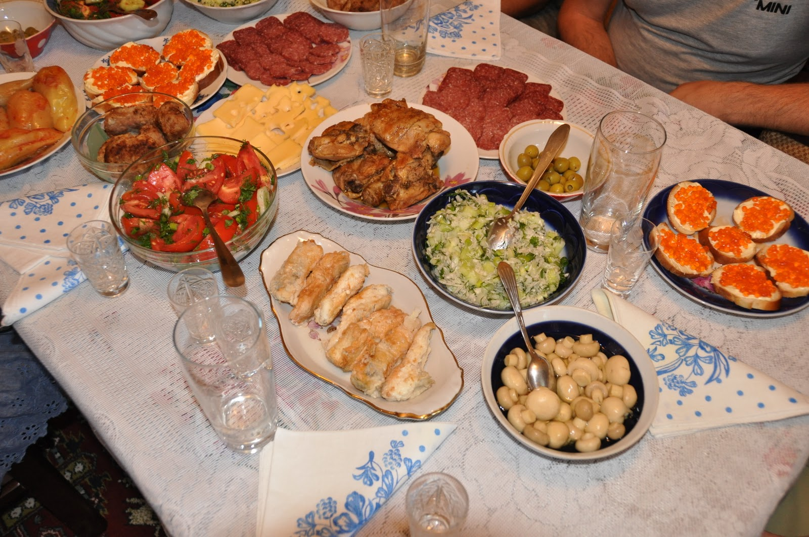

MAIN
TRAVEL INFORMATION
FACTS ABOUT UKRAINE
MAIN
TRAVEL INFORMATION
FACTS ABOUT UKRAINE
VISITA
UCRANIA
EN INVIERNO
Visitar Ucrania en invierno puede no parecer una buena idea debido a la invacion Rusa pero aunque no lo creas es un increible lugar para pasar el invierno y sentir un aire estilo navideño tan tradicional del lugar

CONOCE
COMIDAS
UCRANIANAS
Las comidas clasicas de Ucrania pueden ser muy parecidas a las rusas o alemanas debido a la afinidad geografica que comparte con el pais pero siempre es algo a deleitar dentro de tu paladar
 DESCUBIR MÁS